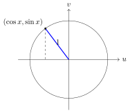
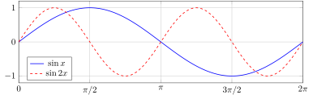
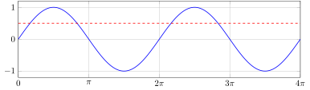
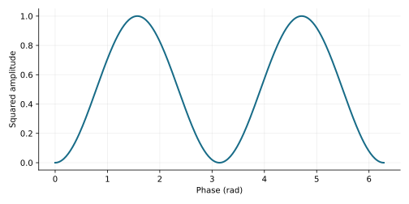

Trigonometric Identities and Equations
Opening context: simplifying periodic models
A rotating sensor, an oscillating instrument, or a periodic physiological measurement can often be represented by several apparently different trigonometric expressions. Identities explain why those expressions agree for every admissible input; equations identify the particular times or angles at which a measurement reaches a prescribed value. The distinction between an identity and an equation is central to this chapter.
Learning outcomes
By the end of this chapter, students should be able to (1) distinguish identities from equations; (2) use reciprocal, quotient, Pythagorean, cofunction, and parity identities; (3) prove identities with logically reversible algebra and domain checks; (4) derive and apply angle-sum, angle-difference, double-angle, and half-angle formulas; (5) solve trigonometric equations over intervals and over all real numbers; (6) interpret extraneous solutions and numerical approximations; and (7) investigate identities and equations with R and Python.
Prerequisite check
Review the unit circle and exact values (Chapter 8), graphs and periods of trigonometric functions (Chapter 9), and factoring, quadratic equations, and rational expressions (Chapters 1–2 and 6). All angles in this chapter are measured in radians unless otherwise indicated.
Computational workflow
For each laboratory, first make an algebraic prediction, then execute the complete R listing, followed by the equivalent Python listing. Code is presented sequentially, never in side-by-side columns. Numerical agreement is evidence for a conjecture, not a proof of an identity.
Identities versus equations
An identity is an equality true for every input where both sides are defined. An equation may hold only at selected inputs. For example, \(\sin^2x+\cos^2x=1\) is an identity, whereas \(\sin x=1/2\) holds only for certain angles. The common domain matters: \(\tan x=\sin x/\cos x\) is an identity only when \(\cos x\ne0\). Numerical testing can reveal a false conjecture but cannot establish an identity for infinitely many inputs.
Example 1. Decide whether \(\sin(2x)=2\sin x\) is an identity. At \(x=\pi/2\), the left side is \(0\) and the right side is \(2\), so the statement is false.
Guided practice 1. Classify \(\cos^2x=1-\sin^2x\) and \(\cos x=0\); state their domains and, for the equation, give two solutions.
Concept check.
Explain the role of the domain, show intermediate algebraic steps, and distinguish an exact identity from a numerical approximation.
Reciprocal and quotient identities
The reciprocal identities are \(\csc x=1/\sin x\), \(\sec x=1/\cos x\), and \(\cot x=1/\tan x\) where the indicated denominators are nonzero. The quotient identities are \(\tan x=\sin x/\cos x\) and \(\cot x=\cos x/\sin x\). They are particularly useful for rewriting complicated expressions in sine and cosine. Always carry exclusions from the original expression: canceling a factor does not restore a point at which the original expression was undefined.
Example 2. Simplify \(\frac{\tan x}{\sec x}\). Writing the quotient in sine and cosine gives \(\frac{\sin x/\cos x}{1/\cos x}=\sin x\) for \(\cos x\ne0\). The simplified formula extends to additional inputs, but the original does not.
Guided practice 2. Simplify \(\frac{\csc x-\sin x}{\cos x}\) and identify every excluded input.
Concept check.
Explain the role of the domain, show intermediate algebraic steps, and distinguish an exact identity from a numerical approximation.
Pythagorean identities and geometric derivation
A point \((\cos x,\sin x)\) on the unit circle satisfies \(u^2+v^2=1\), hence \(\cos^2x+\sin^2x=1\). Dividing by \(\cos^2x\) (when \(\cos x\ne0\)) gives \(1+\tan^2x=\sec^2x\). Dividing by \(\sin^2x\) (when \(\sin x\ne0\)) gives \(1+\cot^2x=\csc^2x\). These identities convert sums of squares into single functions, but square roots require attention to signs.
Example 3. Given \(\sin x=3/5\) and \(x\) in quadrant II, the Pythagorean identity yields \(\cos^2x=16/25\). Since cosine is negative in quadrant II, \(\cos x=-4/5\) and \(\tan x=-3/4\).
Guided practice 3. If \(\tan x=-5/12\) and \(x\) lies in quadrant IV, find \(\sin x\), \(\cos x\), and \(\sec x\).
Concept check.
Explain the role of the domain, show intermediate algebraic steps, and distinguish an exact identity from a numerical approximation.
Even–odd, periodic, and cofunction identities
The unit circle gives \(\sin(-x)=-\sin x\) and \(\cos(-x)=\cos x\); tangent is odd wherever defined. Periodicity gives \(\sin(x+2\pi)=\sin x\), \(\cos(x+2\pi)=\cos x\), and \(\tan(x+\pi)=\tan x\). Complementary-angle relationships include \(\sin(\pi/2-x)=\cos x\) and \(\cos(\pi/2-x)=\sin x\). These formulas reduce unfamiliar angles to reference angles.
Example 4. Evaluate \(\sin(-7\pi/6)\). Oddness gives \(-\sin(7\pi/6)=-(-1/2)=1/2\).
Guided practice 4. Evaluate \(\cos(-5\pi/3)\) and \(\sin(\pi/2-\pi/6)\) exactly.
Concept check.
Explain the role of the domain, show intermediate algebraic steps, and distinguish an exact identity from a numerical approximation.
A reliable strategy for verifying identities
Begin with the more complicated side and transform it into the other side. Useful moves include factoring, finding common denominators, multiplying by a conjugate, or rewriting in sine and cosine. Do not assume the identity by setting the two sides equal and performing steps that might not be reversible. Record restrictions introduced by division. A proof is a chain of justified equalities on the common domain.
Example 5. Verify \(\frac{1-\cos^2x}{\sin x}=\sin x\) for \(\sin x\ne0\). Substitute \(1-\cos^2x=\sin^2x\); dividing by \(\sin x\) gives \(\sin x\).
Guided practice 5. Verify \(\frac{1-\sin^2x}{\cos x}=\cos x\) and state why \(\cos x\ne0\) is required.
Concept check.
Explain the role of the domain, show intermediate algebraic steps, and distinguish an exact identity from a numerical approximation.
Factoring and conjugates in identity proofs
The factorization \(a^2-b^2=(a-b)(a+b)\) appears frequently in trigonometric proofs. Multiplying by the conjugate can convert \(1-\cos x\) into \(\sin^2x/(1+\cos x)\), provided \(1+\cos x\ne0\). A successful simplification should preserve the domain of the original expression even when its final form looks simpler.
Example 6. Show that \(\frac{1-\cos x}{\sin x}=\frac{\sin x}{1+\cos x}\) on their common domain. Multiply the left numerator and denominator by \(1+\cos x\): \(\frac{1-\cos^2x}{\sin x(1+\cos x)}=\frac{\sin x}{1+\cos x}\).
Guided practice 6. Use a conjugate to simplify \(\frac{\sin x}{1-\cos x}\) and state restrictions.
Concept check.
Explain the role of the domain, show intermediate algebraic steps, and distinguish an exact identity from a numerical approximation.
Angle-sum and angle-difference formulas
The fundamental addition formulas are \(\sin(a\pm b)=\sin a\cos b\pm\cos a\sin b\) and \(\cos(a\pm b)=\cos a\cos b\mp\sin a\sin b\). They can be motivated geometrically by rotations: applying a rotation through \(b\) after a rotation through \(a\) has the same effect as a rotation through \(a+b\). The signs are different in the cosine formula; memorizing the pattern without understanding it is a common source of error.
Example 7. Find \(\sin(5\pi/12)=\sin(\pi/4+\pi/6)=\frac{\sqrt2}{2}\frac{\sqrt3}{2}+\frac{\sqrt2}{2}\frac12=\frac{\sqrt6+\sqrt2}{4}\).
Guided practice 7. Find \(\cos(\pi/12)\) exactly using \(\pi/4-\pi/6\).
Concept check.
Explain the role of the domain, show intermediate algebraic steps, and distinguish an exact identity from a numerical approximation.
The tangent addition formula
Dividing the sine addition formula by the cosine addition formula gives \(\tan(a+b)=\frac{\tan a+\tan b}{1-\tan a\tan b}\) whenever all expressions are defined. Similarly, \(\tan(a-b)=\frac{\tan a-\tan b}{1+\tan a\tan b}\). The formula cannot be applied blindly at angles where tangent is undefined or where the resulting denominator vanishes.
Example 8. Compute \(\tan(\pi/12)=\tan(\pi/4-\pi/6)=\frac{1-1/\sqrt3}{1+1/\sqrt3}=2-\sqrt3\).
Guided practice 8. Use the tangent sum formula to compute \(\tan(5\pi/12)\).
Concept check.
Explain the role of the domain, show intermediate algebraic steps, and distinguish an exact identity from a numerical approximation.
Double-angle identities
Set \(a=b=x\) in the addition formulas to obtain \(\sin2x=2\sin x\cos x\) and \(\cos2x=\cos^2x-\sin^2x=1-2\sin^2x=2\cos^2x-1\). For tangent, \(\tan2x=2\tan x/(1-\tan^2x)\) where defined. Choose the cosine form that matches the known information. These formulas also explain why the frequency of a periodic signal can double when it is squared.
Example 9. If \(\sin x=3/5\) and \(\cos x=4/5\), then \(\sin2x=24/25\) and \(\cos2x=16/25-9/25=7/25\).
Guided practice 9. Given \(\cos x=-5/13\) and \(x\) in quadrant II, calculate \(\sin2x\) and \(\cos2x\).
Concept check.
Explain the role of the domain, show intermediate algebraic steps, and distinguish an exact identity from a numerical approximation.
Half-angle and power-reduction identities
From \(\cos2u=1-2\sin^2u\) and \(\cos2u=2\cos^2u-1\), set \(u=x/2\) to obtain \(\sin^2(x/2)=(1-\cos x)/2\) and \(\cos^2(x/2)=(1+\cos x)/2\). Thus \(\sin(x/2)=\pm\sqrt{(1-\cos x)/2}\) and \(\cos(x/2)=\pm\sqrt{(1+\cos x)/2}\); the quadrant of \(x/2\) determines the sign. Power-reduction formulas \(\sin^2x=(1-\cos2x)/2\) and \(\cos^2x=(1+\cos2x)/2\) will later support integration.
Example 10. Find \(\sin(\pi/8)\). Since \(\pi/8\) is in quadrant I, \(\sin(\pi/8)=\sqrt{(1-\cos(\pi/4))/2}=\frac12\sqrt{2-\sqrt2}\).
Guided practice 10. Find \(\cos(\pi/8)\) and explain the sign choice.
Concept check.
Explain the role of the domain, show intermediate algebraic steps, and distinguish an exact identity from a numerical approximation.
Product-to-sum and sum-to-product identities
Adding and subtracting angle-sum formulas yields \(2\sin a\cos b=\sin(a+b)+\sin(a-b)\) and \(2\cos a\cos b=\cos(a+b)+\cos(a-b)\). Another useful identity is \(2\sin a\sin b=\cos(a-b)-\cos(a+b)\). These transformations are useful for periodic signal analysis and later integration, but they do not change the physical meaning of the underlying measurements.
Example 11. Rewrite \(\sin3x\cos x=\tfrac12[\sin4x+\sin2x]\). The right side exposes two frequencies in a product of periodic signals.
Guided practice 11. Rewrite \(\cos4x\cos2x\) as a sum and identify its two angular frequencies.
Concept check.
Explain the role of the domain, show intermediate algebraic steps, and distinguish an exact identity from a numerical approximation.
Solving basic trigonometric equations
To solve \(\sin x=c\) or \(\cos x=c\), first determine whether \(c\in[-1,1]\), then find the reference angle and the appropriate quadrants. For tangent, solutions repeat every \(\pi\). Give either all solutions using an integer parameter \(k\) or a complete list on the specified interval. Checking endpoints matters when the interval is closed.
Example 12. Solve \(\sin x=\sqrt3/2\) on \([0,2\pi)\). The reference angle is \(\pi/3\), and sine is positive in quadrants I and II, giving \(x=\pi/3,2\pi/3\). For all real \(x\), add \(2k\pi\) to each family.
Guided practice 12. Solve \(\cos x=-1/2\) on \([-\pi,\pi]\) and solve \(\tan x=1\) for all real \(x\).
Concept check.
Explain the role of the domain, show intermediate algebraic steps, and distinguish an exact identity from a numerical approximation.
Factoring and quadratic trigonometric equations
Treat a trigonometric expression such as \(\sin x\) as an algebraic variable when the equation is polynomial in that expression. Factor or use the quadratic formula, reject impossible values outside \([-1,1]\), and then solve each remaining trigonometric equation. Dividing by \(\sin x\) or \(\cos x\) can accidentally discard solutions when that factor is zero; factoring is safer.
Example 13. Solve \(2\sin^2x-\sin x-1=0\) on \([0,2\pi)\). Factor \((2\sin x+1)(\sin x-1)=0\). Thus \(\sin x=-1/2\) or \(1\), yielding \(x=7\pi/6,11\pi/6,\pi/2\).
Guided practice 13. Solve \(2\cos^2x+\cos x-1=0\) on \([0,2\pi)\).
Concept check.
Explain the role of the domain, show intermediate algebraic steps, and distinguish an exact identity from a numerical approximation.
Equations involving multiple angles and restrictions
For equations such as \(\sin(2x)=0\), solve first for the entire inner angle \(u=2x\), then divide to recover \(x\). When solving on an interval, map its endpoints through the substitution so no roots are omitted. Squaring both sides can introduce extraneous solutions, and multiplying by a potentially zero expression can alter the solution set. Verify candidates in the original equation.
Example 14. Solve \(\cos(2x)=0\) on \([0,2\pi)\). Since \(2x=\pi/2+k\pi\), \(x=\pi/4+k\pi/2\). The interval gives \(x=\pi/4,3\pi/4,5\pi/4,7\pi/4\).
Guided practice 14. Solve \(\sin(3x)=0\) on \([0,2\pi)\) and explain how many solutions there are.
Concept check.
Explain the role of the domain, show intermediate algebraic steps, and distinguish an exact identity from a numerical approximation.
Applications: timing and periodic thresholds
Suppose a simplified respiratory sensor follows \(S(t)=2+0.8\sin(\pi t/3)\), with \(t\) in seconds and output in arbitrary sensor units. To find times at which \(S(t)=2.4\), solve \(\sin(\pi t/3)=1/2\). This yields \(t=0.5+6k\) or \(t=2.5+6k\) seconds. In the first \(12\) seconds, the threshold occurs at \(0.5,2.5,6.5,8.5\). These are mathematical predictions; real sensor noise may shift observed crossing times.
Example 15. A rotating laboratory marker has height \(h(t)=5+2\cos(\pi t/4)\) cm. Solve \(h(t)=6\) for \(0\le t<8\). We need \(\cos(\pi t/4)=1/2\), so \(\pi t/4=\pi/3,5\pi/3\), giving \(t=4/3\) and \(20/3\) seconds.
Guided practice 15. A periodic temperature model is \(T(t)=37+0.5\sin(\pi t/12)\). Find all \(t\) in \([0,24)\) for which \(T(t)=37.25\) and interpret the units.
Concept check.
Explain the role of the domain, show intermediate algebraic steps, and distinguish an exact identity from a numerical approximation.
Preparation for calculus: identities and difference quotients
The angle-addition formula provides the key algebraic step in the derivative of sine. For \(h\ne0\), \(\frac{\sin(x+h)-\sin x}{h}=\sin x\frac{\cos h-1}{h}+\cos x\frac{\sin h}{h}\). In calculus, the radian-based limits \(\lim_{h\to0}(\sin h)/h=1\) and \(\lim_{h\to0}(\cos h-1)/h=0\) lead to the derivative \(\cos x\). At this stage, students should understand the exact algebraic decomposition; the limit arguments belong to calculus.
Example 16. At \(x=0\), the difference quotient for sine becomes \(\sin h/h\). Evaluate it for \(h=0.1,0.01,0.001\) (radians) and observe its approach to \(1\).
Guided practice 16. Use the cosine addition formula to expand \([\cos(x+h)-\cos x]/h\) without taking a limit.
Concept check.
Explain the role of the domain, show intermediate algebraic steps, and distinguish an exact identity from a numerical approximation.
Visual investigations
Investigation 1: The Pythagorean identity on the unit circle
Draw a unit circle with a point \(P=(\cos x,\sin x)\) in quadrant II. Construct the right triangle to the horizontal axis and label its signed coordinates. Explain why the squared coordinates sum to one regardless of the quadrant. Compare this geometric proof with testing five numerical angles.

Investigation 2: Angle addition as rotation
Sketch two consecutive rotations through \(a=\pi/6\) and \(b=\pi/4\). Compare the final unit-circle coordinates with \(\cos(a+b)\) and \(\sin(a+b)\) from the addition formulas. Explain why \(\sin(a+b)\) is not generally \(\sin a+\sin b\).
Investigation 3: Double-angle frequency
Graph \(y=\sin x\) and \(y=\sin2x\) for \(0\le x\le2\pi\). Mark zeros and peaks and compare the periods. Then graph \(y=\sin^2x\) and \(y=(1-\cos2x)/2\); explain the perfect overlap algebraically.

Investigation 4: A sign trap in half-angle formulas
Evaluate \(\cos x\) at \(x=4\pi/3\) and use it to calculate \(\sin(x/2)\). Explain why the positive square root is correct even though \(\cos x\) is negative. Repeat for \(x=10\pi/3\) and identify the appropriate sign.
Investigation 5: Equation roots versus identity graphs
On the same axes, plot \(y=\sin x\) and \(y=1/2\) over \([0,4\pi]\). Count the intersections, report their exact coordinates, and compare with the general solution families. Then compare \(y=\sin^2x+\cos^2x\) with \(y=1\); explain why this is a different kind of equality.

Investigation 6: Model crossing times and units
For \(S(t)=2+0.8\sin(\pi t/3)\), construct a table every half-second over \([0,12]\). Graph the sensor output and horizontal threshold \(2.4\). Identify crossings graphically, then derive exact times. Describe why numerical grid resolution may miss a crossing.
Extended guided workshops
Workshop A: Verify or refute
For each statement, decide whether it is an identity. If true, give a proof on the common domain; if false, provide an exact counterexample: (a) \(\sin(a+b)=\sin a+\sin b\); (b) \(\sec^2x-\tan^2x=1\); (c) \(\frac{\sin2x}{2\sin x}=\cos x\); (d) \(\cos^2x=(1+\cos2x)/2\). Worked discussion. (a) is false at \(a=b=\pi/2\). (b) follows by dividing the unit-circle identity by \(\cos^2x\); exclude \(\cos x=0\). (c) follows from the double-angle identity but only where \(\sin x\ne0\). (d) is the power-reduction identity and holds for all real \(x\).
Workshop B: Exact values without a calculator
Find \(\sin75^\circ\), \(\cos15^\circ\), \(\tan15^\circ\), and \(\sin22.5^\circ\). Show the decomposition of each angle and explain the correct quadrant/sign. Worked discussion. The respective values are \((\sqrt6+\sqrt2)/4\), \((\sqrt6+\sqrt2)/4\), \(2-\sqrt3\), and \(\sqrt{2-\sqrt2}/2\).
Workshop C: A complete solution-set audit
Solve \(2\cos^2x-3\cos x+1=0\) on \([0,2\pi]\), listing endpoints explicitly. Compare solving by factoring with dividing by \(\cos x\). Worked discussion. \((2\cos x-1)(\cos x-1)=0\), so \(\cos x=1/2\) or \(1\). The solutions are \(0,\pi/3,5\pi/3,2\pi\). Both \(0\) and \(2\pi\) belong to the closed interval.
Workshop D: Physiological signal threshold
A simplified sensor reads \(R(t)=10+3\cos(\pi t/6)\) units. Determine its period, find all times in \([0,24)\) when \(R(t)=11.5\), and explain how the result changes if the sensor clock is shifted by two seconds. Worked discussion. The period is \(12\) s. The equation becomes \(\cos(\pi t/6)=1/2\), giving \(t=2,10,14,22\) s. A two-second right shift adds two seconds modulo the observation window.
Workshop E: From identity to a calculus formula
Starting from \(\sin(x+h)=\sin x\cos h+\cos x\sin h\), subtract \(\sin x\), divide by \(h\ne0\), and group terms. Interpret the numerical values of \(\sin h/h\) and \((\cos h-1)/h\) for small positive and negative \(h\). Worked discussion. The result is \(\sin x(\cos h-1)/h+\cos x\sin h/h\). In radians, the two numerical factors approach \(0\) and \(1\) respectively, suggesting the derivative of sine.
Computational Laboratory A: Checking identities numerically
Goal. Compare both sides of Pythagorean and double-angle identities over a grid, and investigate floating-point error. Exact algebraic proof remains necessary.
R code
# Laboratory A: identities and numerical precision
x <- seq(-2*pi, 2*pi, length.out = 1001)
pythagorean_error <- sin(x)^2 + cos(x)^2 - 1
double_angle_error <- sin(2*x) - 2*sin(x)*cos(x)
cat("Max Pythagorean error:", max(abs(pythagorean_error)), "\n")
cat("Max double-angle error:", max(abs(double_angle_error)), "\n")
plot(x, pythagorean_error, type="l", col="blue", xlab="Angle (radians)", ylab="Numerical difference", main="Floating-point identity check")
abline(h=0, lty=2)Python code
# Laboratory A: identities and numerical precision
import numpy as np
import matplotlib.pyplot as plt
x = np.linspace(-2*np.pi, 2*np.pi, 1001)
e1 = np.sin(x)**2 + np.cos(x)**2 - 1
e2 = np.sin(2*x) - 2*np.sin(x)*np.cos(x)
print("Max Pythagorean error:", np.max(np.abs(e1)))
print("Max double-angle error:", np.max(np.abs(e2)))
plt.plot(x, e1)
plt.axhline(0, linestyle="--", color="black")
plt.xlabel("Angle (radians)")
plt.ylabel("Numerical difference")
plt.title("Floating-point identity check")
plt.tight_layout()
plt.savefig("labA_python.png", dpi=160)
plt.close()Interpretation. Explain why a maximum discrepancy near machine precision is expected and why numerical agreement at finitely many inputs is not a proof.
Computational Laboratory B: Solving trigonometric equations
Goal. Plot a trigonometric function and a target threshold; compare grid-based approximations with exact roots. The bisection routine brackets roots only where the function changes sign, so tangent roots and even-multiplicity roots need additional care.
R code
# Laboratory B: solving sin(x) = 1/2 numerically
f <- function(x) sin(x) - 0.5
x <- seq(0, 4*pi, length.out=2001)
plot(x, sin(x), type="l", col="blue", xlab="x (radians)", ylab="y", main="Sine and target threshold")
abline(h=0.5, col="red", lty=2)
roots <- c(pi/6, 5*pi/6, 13*pi/6, 17*pi/6)
points(roots, sin(roots), pch=19)
print(data.frame(root=roots, residual=f(roots)))Python code
# Laboratory B: solving sin(x) = 1/2 numerically
import numpy as np
import matplotlib.pyplot as plt
x = np.linspace(0, 4*np.pi, 2001)
roots = np.array([np.pi/6, 5*np.pi/6, 13*np.pi/6, 17*np.pi/6])
print("Root and residual:")
for r in roots:
print(f"{r:.9f} {np.sin(r)-0.5:.2e}")
plt.plot(x, np.sin(x), label="sin(x)")
plt.axhline(0.5, color="red", linestyle="--", label="target")
plt.scatter(roots, np.sin(roots), color="black")
plt.xlabel("x (radians)")
plt.legend()
plt.tight_layout()
plt.savefig("labB_python.png", dpi=160)
plt.close()Interpretation. Compare numerical roots with \(\pi/6,5\pi/6,13\pi/6,17\pi/6\) for \(\sin x=1/2\) on \([0,4\pi]\).
Computational Laboratory C: Periodic sensor thresholds
Goal. Simulate a simplified periodic measurement, mark its threshold crossings, and verify them algebraically. All quantities are illustrative, not clinical recommendations.
R code
# Laboratory C: periodic sensor and threshold times
sensor <- function(t) 2 + 0.8*sin(pi*t/3)
t <- seq(0, 12, length.out=1201)
crossings <- c(0.5, 2.5, 6.5, 8.5)
plot(t, sensor(t), type="l", col="blue", xlab="Time (seconds)", ylab="Sensor units", main="Illustrative periodic sensor")
abline(h=2.4, col="red", lty=2)
points(crossings, sensor(crossings), pch=19)
print(data.frame(time=crossings, sensor=sensor(crossings)))Python code
# Laboratory C: periodic sensor and threshold times
import numpy as np
import matplotlib.pyplot as plt
def sensor(t):
return 2 + 0.8*np.sin(np.pi*t/3)
t = np.linspace(0, 12, 1201)
crossings = np.array([0.5, 2.5, 6.5, 8.5])
for time in crossings:
print(f"t={time:.1f} s, sensor={sensor(time):.3f}")
plt.plot(t, sensor(t), label="sensor")
plt.axhline(2.4, color="red", linestyle="--", label="threshold")
plt.scatter(crossings, sensor(crossings), color="black")
plt.xlabel("Time (seconds)")
plt.ylabel("Sensor units")
plt.legend()
plt.tight_layout()
plt.savefig("labC_python.png", dpi=160)
plt.close()Interpretation. Describe the period, units, threshold, and the limitations of a noiseless sinusoidal model.
Additional guided practice: a structured problem-solving clinic
Clinic 1: What does a complete proof require?
Consider \(\frac{\sec x-\cos x}{\tan x}=\sin x\). A first attempt might substitute numerical angles and observe agreement. A valid proof instead begins with the left side, rewrites \(\sec x-\cos x=(1-\cos^2x)/\cos x=\sin^2x/\cos x\), and divides by \(\tan x=\sin x/\cos x\) to obtain \(\sin x\). This proof is valid only when \(\sin x\ne0\) and \(\cos x\ne0\), which are precisely the restrictions required by the original left side. The right side is defined everywhere, but the identity is asserted only on the common domain.
Try it. Verify \(\frac{\csc x-\sin x}{\cot x}=\cos x\). Before simplifying, write down all excluded angles. Then ask whether the simplified expression extends beyond the original domain.
Clinic 2: Choosing a useful identity
A common difficulty is deciding which identity to apply first. When an expression contains \(\sin^2x+\cos^2x\), use the unit-circle identity. When it contains \(\sin x\cos x\), consider \(\sin2x\). When a fraction contains \(1-\cos x\) or \(1+\cos x\), try a conjugate. When an angle is a sum of special angles, use an addition formula. When a trigonometric equation contains a square, factor as an algebraic quadratic before using the unit circle.
Try it. For each expression, name the first identity you would use, then simplify: (a) \(2\sin x\cos x\); (b) \(1-2\sin^2x\); (c) \(\sin(\pi/3+\pi/4)\); (d) \(\frac{1-\cos^2x}{1+\cos x}\). State the restrictions for (d).
Clinic 3: Counting solutions without missing endpoints
Suppose \(\sin(2x)=1/2\) on \([0,2\pi]\). Set \(u=2x\), so \(u\in[0,4\pi]\). Within this interval, \(u=\pi/6,5\pi/6,13\pi/6,17\pi/6\). Therefore \(x=\pi/12,5\pi/12,13\pi/12,17\pi/12\). Simply solving for \(u\) on \([0,2\pi]\) would miss half the answers. The substitution must transform the interval as well as the equation.
Try it. Solve \(\cos(3x)=1/2\) on \([0,2\pi)\) by first solving for \(u=3x\) on \([0,6\pi)\). Verify the number of roots with a graph.
Clinic 4: Exact answers versus approximate answers
Exact answers such as \(\pi/6\) preserve mathematical structure. A decimal approximation such as \(0.523599\) can be useful for a time measurement, but it is not identical to the exact number. In applications, state the input units and round only after solving. If the model is approximate, do not report excessive precision merely because the calculator supplies many digits.
Try it. A sensor has model \(S(t)=3+\sin(\pi t/4)\), with \(t\) measured in seconds. Find every crossing of \(S(t)=3.5\) in \([0,16)\). Report exact times and then approximate to the nearest hundredth of a second. Explain why these are model-based crossing times.
Collaborative investigation: build and critique a periodic model
In groups, choose a simplified periodic context (a rotating marker, a laboratory oscillator, or a repeated temperature cycle). Specify a baseline, amplitude, and period with units. Construct a sinusoidal model and select a threshold that is neither the maximum nor the minimum. Solve the threshold equation exactly if possible, then plot the model and confirm the crossing times. Finally, critique the model: Which assumptions make the sinusoidal form plausible? What kinds of noise, drift, or asymmetry would make the prediction less reliable? Submit the equation, a labeled graph, a complete solution set on a specified interval, and a short paragraph distinguishing exact mathematics from assumptions about the real-world process.
Chapter summary and formula reference
| Concept | Formula or principle |
|---|---|
| Pythagorean | \(\sin^2x+\cos^2x=1\); \(1+\tan^2x=\sec^2x\) |
| Reciprocal | \(\sec x=1/\cos x\), \(\csc x=1/\sin x\) |
| Sine addition | \(\sin(a\pm b)=\sin a\cos b\pm\cos a\sin b\) |
| Cosine addition | \(\cos(a\pm b)=\cos a\cos b\mp\sin a\sin b\) |
| Double angle | \(\sin2x=2\sin x\cos x\); \(\cos2x=1-2\sin^2x\) |
| Power reduction | \(\sin^2x=(1-\cos2x)/2\) |
| Equation solving | Find reference angle, quadrants, period, interval, and verify |
Chapter review exercises
Part I: Conceptual reasoning. Provide explanations and domain restrictions.
Explain why testing an identity at one hundred angles does not prove it.
State the domain of \(\tan x=\sin x/\cos x\).
Give an example of an identity and an equation that look similar but have different meanings.
Explain why \(\sqrt{\cos^2x}=|\cos x|\), not necessarily \(\cos x\).
Describe how a periodic solution family differs from a principal inverse-trigonometric value.
Explain why dividing \(\sin x\cos x=0\) by \(\sin x\) can lose solutions.
Part II: Identities and exact values.
Simplify \((1-\sin^2x)/\cos x\) on its domain.
Prove \((\sec x-\cos x)/\sin x=\sin x/\cos x\) on the common domain.
Evaluate \(\sin(\pi/12)\) exactly.
Evaluate \(\cos(5\pi/12)\) exactly.
Evaluate \(\tan(5\pi/12)\) exactly.
Find \(\sin2x\) when \(\sin x=5/13\) and \(x\) is in quadrant II.
Find \(\cos2x\) when \(\cos x=3/5\) and \(x\) is in quadrant IV.
Find \(\cos(\pi/8)\) using a half-angle formula.
Rewrite \(\sin5x\cos2x\) as a sum.
Rewrite \(\sin^2(3x)\) in terms of a cosine.
Prove \(\frac{1}{1+\cos x}+\frac{1}{1-\cos x}=2\csc^2x\) on the common domain.
Prove \(\tan x+\cot x=\sec x\csc x\) on the common domain.
Part III: Solve exactly.
Solve \(\sin x=-\sqrt2/2\) on \([0,2\pi)\).
Solve \(\cos x=\sqrt3/2\) on \([-\pi,\pi]\).
Solve \(\tan x=-1\) for all real \(x\).
Solve \(2\sin^2x+\sin x-1=0\) on \([0,2\pi)\).
Solve \(2\cos^2x-\cos x-1=0\) on \([0,2\pi)\).
Solve \(\sin2x=0\) on \([0,2\pi)\).
Solve \(\cos3x=1\) on \([0,2\pi)\).
Solve \(\sin x\cos x=0\) on \([0,2\pi)\) without dividing by either factor.
Part IV: Modeling and calculus readiness.
For \(S(t)=4+2\sin(\pi t/5)\), find all \(t\in[0,20)\) with \(S(t)=5\).
For \(H(t)=8+3\cos(\pi t/4)\), find all \(t\in[0,16)\) with \(H(t)=9.5\).
Expand \([\sin(x+h)-\sin x]/h\) using an addition identity.
Evaluate \(\sin h/h\) for \(h=0.1,0.01,0.001\) and explain the role of radians.
Calculus-readiness checkpoint
Without using derivative rules, rewrite \([\cos(x+h)-\cos x]/h\) as a sum of two terms involving \(\sin h/h\) and \((\cos h-1)/h\). Explain how the trigonometric identities developed in this chapter make this possible. Then discuss why a graphical or computational experiment suggests, but does not establish, the limiting result.
Looking ahead
Chapter 11 applies trigonometry to triangles, navigation, periodic processes, and real-world modeling. The identity and equation techniques here will also reappear in single-variable calculus, particularly when differentiating and integrating trigonometric functions.
Extended application: Power in an oscillating signal
A normalized oscillating signal has instantaneous squared amplitude given by the square of its sine component. The quantities in this investigation are illustrative rather than measured observations.
Formulating the mathematical model
The proposed relationship is \[P(\theta)=\sin^2\theta.\] Before calculating, identify the input and output, their units, and the interval on which the model is being studied. Distinguish the mathematical domain from the practical domain. The numerical study uses inputs from \(0\) to \(6.28\).
Example 17: Analytical investigation. Use a double-angle identity to rewrite \(P\). Solve \(P=1/4\) on \([0,2\pi)\).
Worked solution. \(P=(1-\cos 2\theta)/2\). Solutions are \(\pi/6,5\pi/6,7\pi/6,11\pi/6\).
Connecting numerical and graphical representations
| Phase (rad) | Squared amplitude |
|---|---|
| 0 | 0 |
| 1.57 | 1 |
| 3.14 | 4.278e-26 |
| 4.71 | 1 |
| 6.28 | 1.711e-25 |

Interpretation. Compare the tabulated values with the graph. Identify the intervals over which the output increases or decreases, and distinguish a sampled extremum from an exact analytical extremum. Explain whether interpolation and extrapolation have the same justification in this setting.
R implementation
The following standalone script defines the model, generates predictions, and draws a labeled graph. Read the formula before running the code. The sampled range is a numerical diagnostic, not a proof of the exact range.
# Applied investigation: Power in an oscillating signal
# 1. Define the input domain and model
x <- seq(0, 6.28318530718, length.out = 301)
y <- sin(x)^2
# 2. Inspect numerical predictions
idx <- unique(round(seq(1, length(x), length.out = 5)))
print(data.frame(input = x[idx], output = y[idx]))
# 3. Visualize the model with labeled axes
plot(x, y, type = "l", lwd = 2, col = "#176B87",
xlab = "Phase (rad)", ylab = "Squared amplitude")
grid()
# 4. Check the sampled output range
print(range(y))Python implementation
Repeat the same investigation using NumPy arrays and Matplotlib. Compare the printed predictions with the R output, allowing for rounding.
# Applied investigation: Power in an oscillating signal
import numpy as np
import matplotlib.pyplot as plt
# 1. Define the input domain and model
x = np.linspace(0, 6.28318530718, 301)
y = np.sin(x)**2
# 2. Inspect numerical predictions
idx = np.unique(np.linspace(0, len(x)-1, 5).round().astype(int))
print(np.column_stack((x[idx], y[idx])))
# 3. Visualize the model with labeled axes
fig, ax = plt.subplots(figsize=(7, 3.6))
ax.plot(x, y, "-", color="#176B87", linewidth=2)
ax.set(xlabel="Phase (rad)", ylabel="Squared amplitude")
ax.grid(alpha=0.22)
ax.spines[["top", "right"]].set_visible(False)
fig.tight_layout()
plt.show()
# 4. Check the sampled output range
print(np.min(y), np.max(y))Guided practice: checking the model
Calculate the outputs at the two endpoints by hand. Compare them with the numerical table.
Select an interior input not listed in the table. Predict the output before evaluating it in either language.
Explain the meaning of the difference between the two endpoint outputs, including units. If appropriate, calculate the average rate of change.
Identify a physical assumption of the model and describe a circumstance in which it would fail.
Chapter project: investigating Power in an oscillating signal
Prepare a short technical report for a reader who has not studied the model. Use the preceding case as a starting point, but develop your own investigation rather than merely reproducing the worked example.
State a quantitative question that can be answered using the model. Define all variables, units, and restrictions.
Modify one meaningful numerical parameter in the formula. Explain what the change represents in the original context. Derive the revised formula and predict the direction of change before computing.
Compare the original and revised models at five common admissible inputs. Present a labeled table and explain the largest difference in the table.
Produce a graph containing both models on the same axes. Use a legend and distinguish the curves with line styles or markers. Explain the shape and any intersections.
Solve your quantitative question algebraically where possible. Verify the result using R and Python; report any differences due to numerical precision.
Discuss at least two limitations. Describe what measurements would be needed to assess the model in practice. Do not present simulated predictions as empirical evidence.
Project deliverables and assessment
Submit a two- to three-page report, the two runnable scripts, and the labeled figure. The report should stand on its own without requiring the reader to inspect the code.
| Criterion | Points |
|---|---|
| Mathematical formulation and domain | 20 |
| Analytical reasoning and verification | 25 |
| Reproducible R and Python computations | 20 |
| Graph and table quality | 15 |
| Interpretation and limitations | 20 |
| Total | 100 |
Companion scripts
Interactive investigation: Trigonometric equations
Enable JavaScript to explore the model.
Explore and explain: Count solutions on one full period. When are there none?